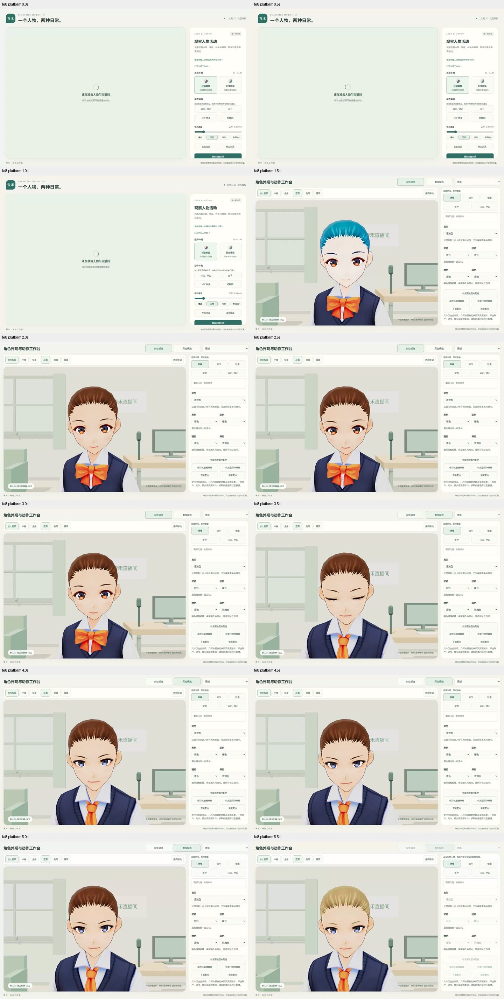
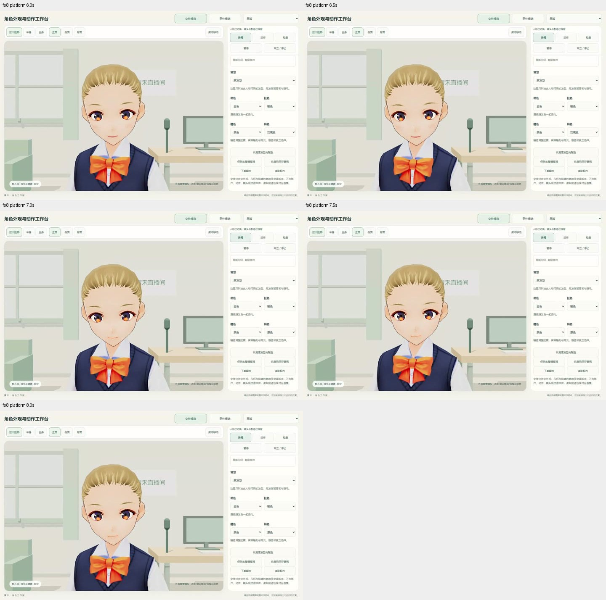

构建 fe834ac7f5f0 · 源码 45e37abd6370b503b95616c82f485f4df4382194 · 观感待审。
本版核对实际候选查询、v7 准入与准备、agent 命令后的工作台状态、真实颜色和性别控件，以及对照实例隔离。记录来自开发机。
v1 的最后切换要求沿用 rose 唇色进入尚无此唇色 fit 的小腿派生身体，错误预期为切换成功。v1 失败记录保留。v2 先确认拒绝并完整保留旧角色与控件，再明确选择 original 唇色和瞳色后切换。
v2 原始报告 · v1 失败原始报告 · v1 失败原片 · 哈希与完整抽帧索引
aed6ec9ff061 皮肤叠层原样件、表情与完整录像保留其原构建身份和审查记录。

